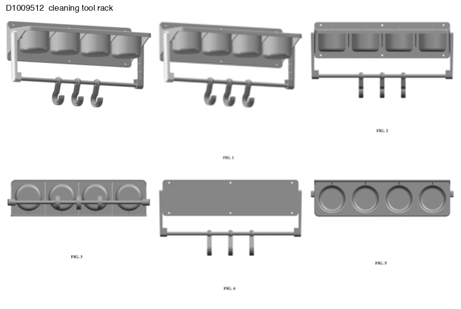
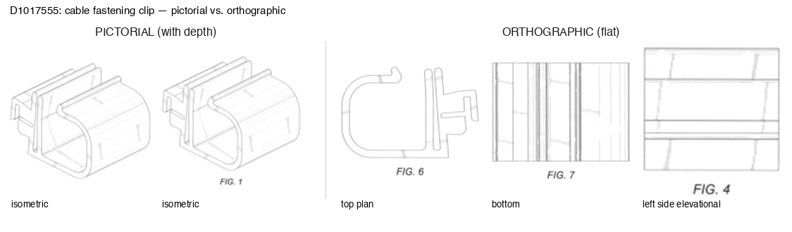
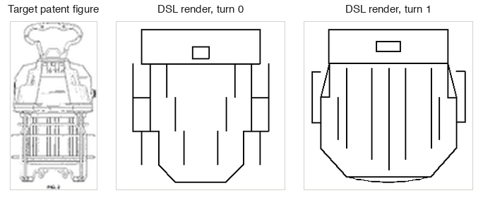

The playground below lets you try the task we give the models: decide whether one shape is another rotated, or its mirror image. The SO(2) tab is the orthographic, planar case, with shapes spun in a flat plane; the SO(3) tab is the pictorial, three-dimensional case, with objects turned freely in space.
As you change a shape, watch how three graders score the answer: a strict one that checks the true geometry, a middle one that checks a rotation-invariant shortcut that is blind to handedness, and a loose one that rewards confident-looking answers. The point is to feel directly how much the grader you optimize against decides whether getting better means getting the geometry right or just satisfying the check.
In this work, we study structural reasoning in the context of patent and technical design understanding. Our contributions include several novel task types that benchmark capabilities needed for strong agentic performance in physical design domains.
We think this work is interesting as people prompt to orient digital objects in their generations, models' ability to apply spatial reasoning will be tested and we want to see to what extent it is possessed.
For each task, we experiment with multiple representations of the underlying information. We are interested not only in which models perform best, but how the way the information they are presented and asked to present is structured. To do this, we also release a gym environment with design patent figures as states, a DSL action space for composing figures, gradeable spatial reasoning tasks that provide verifiable rewards, and a renderer that turns the DSL into a visual form.
In general, we find that representational interventions can equip models with the support they need to perform on tasks that require spatial understanding, however, it is important to be intentional about the types of representations and when they are implemented. In our view, spatial reasoning can be decomposed into two parts: categorical and geometric thinking. Categorical thinking — where a model, for example, should identify the correct viewpoints from a set — is best supported via test-time reasoning, whereas geometric thinking likely needs to be imbued in a model during early stages (i.e. training).
We view patents and their figures as a rich data source given their ground truth and real-world implications for relational structural understanding in a visual domain. Patent analysts and inventors ask questions relevant to anyone building generatively: how similar is what I’m building to existing tools? How do I build cumulatively without redundant work? And what should I add next? We use these as the basis for our task design. For agents to be true builders, they should understand how their outputs fit into the existing innovation landscape and situate their generations within that context.

Overall, we find that models have the necessary knowledge but struggle to apply it in physical domains. That is, they can describe what they should do but struggle to execute. We use Locarno classifications to understand whether different types of design are more difficult for models.
Masked view. For this task, we try to assess models’ ability to determine the viewpoint of a given figure. This task is structured where the figures of a patent are described, all but one have their viewpoints written out and the remaining one does not. From this, the model has to write out the viewpoint of the masked figure.
FIG. 1 is a perspective view thereof.
FIG. 2 is a ____ view thereof. (masked; target: front elevation)
FIG. 3 is a rear elevational view thereof.
Figure retrieval. For this task, we split it into two parts: first, we identify whether models can find the correct figure from a set of figures drawn from various patents (i.e., other objects); second, we identify whether models can find the right view of a given object among its other views, which are similar in embedding space.
Part 1 (across patents): query = front elevation of a beverage container [A] front elevation of a desk lamp (other object) [B] perspective of a hinge bracket (other object) [C] front elevation of a beverage container <- target Part 2 (within object): query = "rear elevation" of object D1023456 candidates = its own sibling views {perspective, front, top, rear*} target = rear (* nearest neighbors in CLIP space, hardest distractors)
Intent elicitation. With this task, we ask whether drawing descriptions can be mapped to design intent. We give a structured schema and employ token overlap (F1) as our measure for accuracy. Here, we ask whether the model can produce coherent explanations of designs instead of only summarizing the description McCarthy et al., 2024. We use this task, in particular, to probe into how models reason.
Input (drawing description): "FIG. 1 is a perspective view of a folding chair; FIG. 2 is a side elevational view thereof; ..." Output (filled schema): viewpoint_set : [perspective, front, side, top] primary_view : perspective component_vocab: [seat, backrest, legs, hinge] spatial_layout : "hinged seat and backrest over four folding legs" design_intent : "a collapsible chair for compact storage"
Agent-to-agent communication. We view a model’s ability to express its work and outputs as a pre-cursor to collaborating and iterating in offline settings. For this task, two agents form a dyad and play a reference game adapted from the procedural-abstraction communication setup of McCarthy et al. (2021), in which agent A is given a patent figure and expresses its design in natural language to agent B, who must reconstruct it. We run this under two conditions, viewpoint-aware and viewpoint-agnostic.
Designer (sees target view): "A perspective view of a cylindrical bottle with a ribbed cap and a tapered neck." Maker (sees a pool of candidate figures, no labels): picks 1 of N Score: 1 if Maker’s pick == Designer’s target, else 0
We source patents and the corresponding designs from the IMPACT dataset (Shomee et al., 2024) — a multi-modal dataset of patents and their figures in paired image–caption format with accompanying patent metadata including the issuing year, the author, and its description. The dataset includes patents from a 15-year time-span (2007–2022). We enrich the dataset with data from 2023–April 2026 and include model-generated descriptions of the images themselves and we gather metadata for the figures including how many there are per patent, the ID, sibling figures and we number the components. For the years we extend, we source the figure images from Google Patents image hosting. In total, we analyze 2.65M patent figures. As part of our processing for this data and as the setup for our tasks we embed each figure with CLIP ViT-L/14, 768-dim.
Acknowledging that there was no pre-defined programming language for patent visual reasoning that could be used for our corpus, we induce a DSL directly from the corpus. To induce the grammar, we extract unique terms from each figure’s description and attach each to a “projection.” In a given patent, the same article — for example, a hinge bracket — is shown in a variety of viewpoints (the front view, rear view, and the left and right views). We define each of these viewpoints as leaves in the tree.
FIG. 1 is an isometric view showing the left side and top of our design of a fastening clip for cables. FIG. 2 is an isometric view showing the right side and bottom thereof; FIG. 3 is a front elevational view thereof; FIG. 4 is a rear elevational view thereof; FIG. 5 is a left side elevational view thereof; FIG. 6 is a right side elevational view thereof; FIG. 7 is a top plan view thereof; and, FIG. 8 is a bottom view thereof.
| FIG. 1 | isometric | pictorial |
| FIG. 2 | isometric | pictorial |
| FIG. 3 | front elevation | orthographic |
| FIG. 4 | rear elevation | orthographic |
| FIG. 5 | left elevation | orthographic |
| FIG. 6 | right elevation | orthographic |
| FIG. 7 | top plan | orthographic |
| FIG. 8 | bottom plan | orthographic |
At the root of the grammar, it breaks down into pictorial and orthographic representations. Pictorial representations refer to images of the figures with depth; orthographic ones are flat and taken head-on (e.g. front, rear, left, right, top, and bottom views). Pictorial views then branch into perspective (representing the figure as it would be perceived from different viewpoints) or isometric (representing the figure at 30 degrees off horizontal on each side, so that scale is preserved).

Models are given a canvas and essentially a set of shapes and lines forming a total of three primitives (lines, circles, and arcs) that they can use to build figures. The transformation of these primitives into ink on the blank canvas is known as rasterization.
D = {
l((0.20,0.80),(0.80,0.80)), % line: two endpoints
c((0.40,0.50),(0.60,0.50)), % circle: diameter endpoints
a((0.20,0.30),(0.50,0.45),(0.80,0.30)) % arc: start, mid, end
}

We find that models are capable of identifying perspective from flat orthographic views (2D representations, akin to what you would observe if you had scanned a 3D object), but struggle with pictorial views (3D representations, akin to what you would observe if you had taken a picture of a 3D object from an angle). We see that models lack the ability to verify the viewpoints they suggest.
| Condition | Similarity | Δ |
|---|---|---|
| Same object, same viewpoint | 0.892 | +0.122 |
| Same object, different viewpoint | 0.860 | +0.090 |
| Different object, same viewpoint | 0.776 | +0.006 |
| Different object, different viewpoint | 0.770 | 0.000 |
We also explore a notion of ‘format tax.’ In this work, the DSL also served as a normalizer for the sake of scoring. However, we look at the costs of representation and how lossy it was. Across models we see that different ones are more capable than others at adhering to new languages and learning abstractions. Given the language to describe figures as an input, we see that it costs every model 26–30 points for accuracy.
For fill-in-the-middle (FIM) tasks, we find that natural language representations substantially outperform vision-only approaches. One plausible explanation is that vision-only models encounter a distribution mismatch: technical wireframes and patent figures are relatively uncommon compared to the image distributions on which these models are typically trained.
| Setting | Accuracy | Random (1/8) |
|---|---|---|
| Masked-view, text | 88–95% | 12.5% |
| Viewpoint ID, vision-only | ~23% | 12.5% |
| Linear probe (CLIP → viewpoint) | 43.2% (33.8% bal.) | 12.5% |
To understand whether pattern-matching is happening in model cognition we use logistic regression to separate visual features from patent figure images (224×224, 50,176 pixels). This provides us a vector representation projected into a lower dimensional space (768 features), where each patch corresponds to a set of pixels from the original space (256 patches of 14×14 pixels). We see whether the geometry of this visual space corresponds to the outputs of the model by seeing if they are linearly accessible. We observe that the model has an internal representation of pictorial views with depth but not orthographic ones.
We see that information about some views are already in CLIP’s features but are not expressed. However, we can double the accuracy of retrieval on new objects by using a lightweight linear probe and simply reading out the encoded knowledge about the perspective (going from 18.9% to 46.9%). This further supports the notion that communication is a core bottleneck for models in spatial reasoning environments rather than their knowledge alone. The Platonic Representation Hypothesis posits that representations for a model across modalities are convergent (Huh et al., 2024). Experiments from work on the universal geometry of embeddings across architectures also agree (Jha et al., 2025). However, we argue that viewpoint is a unique dimension such that it requires different internal understanding of the world. While the identity of the object agrees across modalities, there is no shared structure across viewpoints.
To check that the orthographic collapse is not an artifact of linear decoding, we re-run the viewpoint probe with a Handa-style 2-layer MLP (one hidden layer, 256 units) on the same frozen CLIP ViT-L/14 features, each with a Hewitt–Liang shuffled-label control task (Hewitt & Liang, 2019). The collapse persists: the flat orthographic views (front, top, section) stay near-floor under the more expressive probe, overall accuracy rises only +1.7pp, and selectivity increases (+0.20 → +0.23) — so the small gains are genuine signal, not the capacity overfitting an MLP can introduce. Viewpoint is weakly recoverable from CLIP linearly and nonlinearly.
Just as humans have heuristics and cognitive tools to help them navigate the world, we question whether with the right support, models can also reason and to what degree it helps. We provide different anchors to test this. The first anchor is an image of an object of the same view with a description and the prompting question. The second is a landmark, where we have the same two images and instead of asking the model to simply supply the view, we ask it to first identify a distinguishing feature or form of asymmetry to figure out the second image’s viewpoint.
We find this suite of tasks compelling because domain expertise should not be a prerequisite for success.
More broadly, we hope these findings can inform the design of new interfaces for interacting with foundation models, rather than focusing exclusively on measurable model capabilities. While we focus on evaluating models out of the box, future work might look at a broader set of models and their harnesses to emulate real-world conditions. Additionally, many of the tasks we include require compositional understanding of how components fit together in the physical world. It remains unclear, however, whether such understanding depends on visual reasoning and spatial cognition, or whether language and code abstractions alone are sufficient.